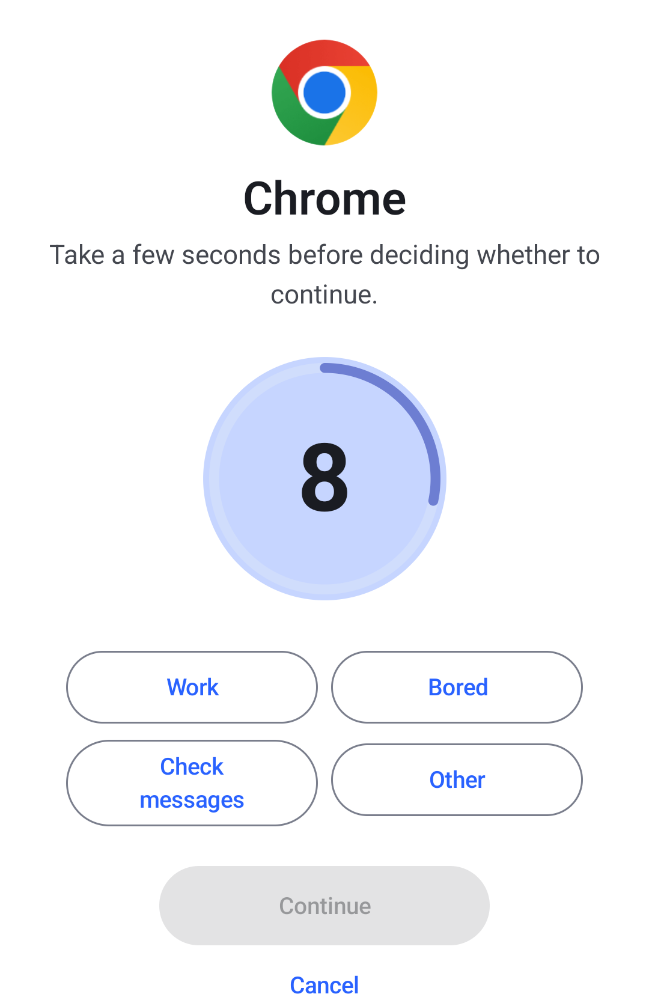
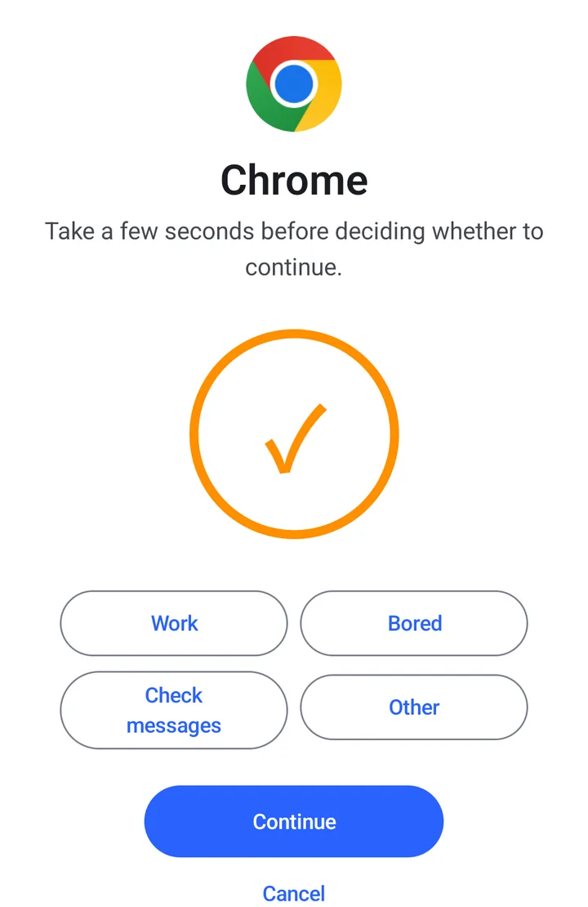
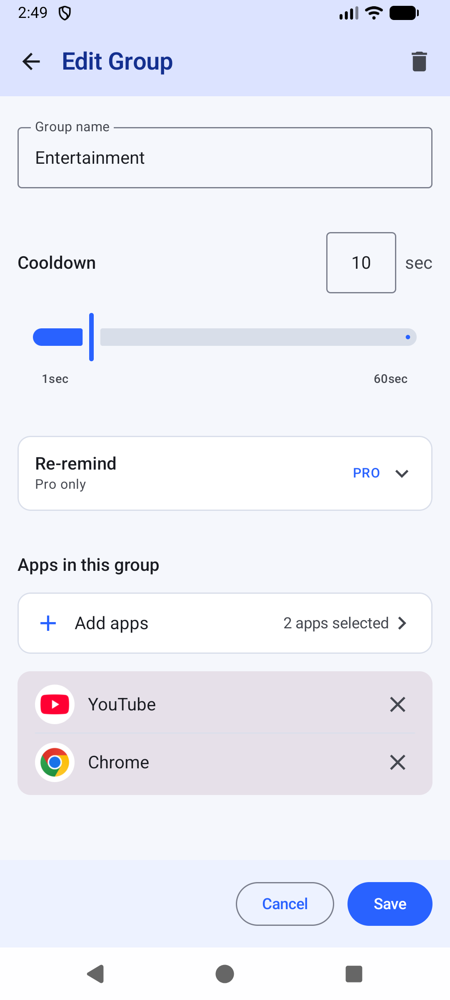
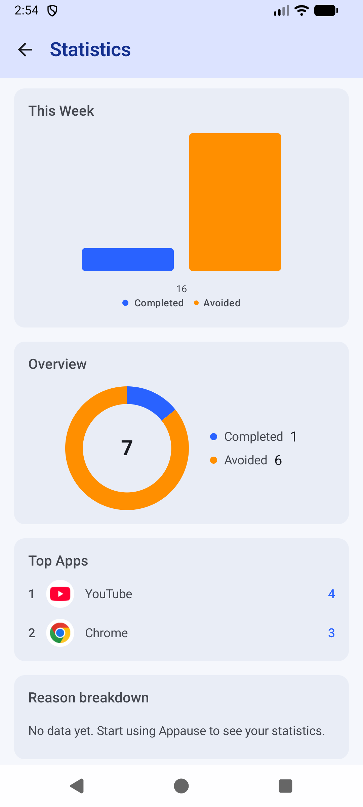

Pause first.
Then decide.
Before an app you picked opens, Appause adds a few seconds of cooldown. Then you choose: continue, or go home.
Free, with no paid version. Android 8.0 and later.
The button downloads the APK directly from GitHub. Lanzou mirror and download details


- Open an app you picked
- Wait out a short cooldown, and name a reason if you like
- Continue, or go home
Open the app, wait a few seconds, then continue or go home.
This demo waits 5 seconds; in the app, new groups start at 10.
Example app is in a group. Tap here to try
Example app
Take a few seconds before deciding whether to continue.
Set up in three steps
Appause is not in an app store. Download the APK from GitHub or the Lanzou mirror.
-
Download and allow the install
Tap a download button on this page. Android will block unknown apps at first; allow installs only for the browser or file manager you use to open the APK.
-
Open Appause and turn on permissions
The home screen lists what is still missing. Turn each one on as prompted. Which phones need which permissions is in the next section.
-
Create a group
Pick the apps you want a cooldown on and set its length. Interception starts working from here.
To update later, install the new APK over the old one. Do not uninstall first: uninstalling deletes your groups and statistics. Full steps are in the install guide.

Which permissions to turn on
It depends on your phone. There are three cases.
Every Android phone
- Accessibility service
- Tells Appause which app just opened, and shows the pause screen on top of it. It does not read screen content, messages, screenshots or keystrokes. Without it, nothing is intercepted.
Also on phones with strict background limits (Xiaomi, Huawei and others)
- Battery optimization set to Unrestricted
- To save power, the system stops Appause's background service and does not restart it. You notice it when a limited app opens without a pause.
- Autostart
- Brings the service back after a restart or after the system clears background apps. The name varies by brand; Huawei calls it App launch. Stock Android has no such switch, so you can skip it there.
Optional
- Usage access
- Confirms which app is really on screen. Without it, opening Recents or switching apps can now and then show a pause for an app you did not open.
- Display over other apps
- Not needed day to day. Turn it on as a fallback only if your phone does not show the pause screen.
- Notifications
- The ongoing status notification on Android 13 and later. Interception works without it.
No network in daily use. Appause connects only when you start the trial, redeem a code or send feedback. Groups, cooldown settings and statistics stay on this phone and are deleted when you uninstall. Details are in the privacy policy.
Your record
Each time a pause ends, Appause notes whether you continued or cancelled, for you to look back on.
- Completed
- You waited out the cooldown and continued.
- Avoided
- You tapped Cancel on the pause screen and went home.
- Reasons
- The reason you picked when continuing is saved too. The free version keeps 365 days of history.

Free, with no paid version
Pro's four features are free too. Try them for 7 days, then request a lifetime code.
Included from the start
- Interception, cooldown, pause screen and statistics, with no time or usage limit
- 1 group
- Cooldowns from 1 to 60 seconds, the same limit as Pro
- 365 days of statistics
- A diagnostic snapshot with feedback, sent only if you choose
Pro adds
- Unlimited groups
- Re-remind: a second nudge while you stay in the app
- Your own pause text
- Your own open reasons
- Start the 7-day trial on the app's Pro screen. Each device gets one.
- When the trial ends, the four Pro features switch off. Your groups and statistics stay.
- Request a free lifetime code through Settings → Feedback, then redeem it on the Pro screen. One code works on up to 3 devices.
Check it in the source
Appause is open source under the MIT license. What this page says can be traced to the code.
- MIT license
- Read it, build it, change it. If the project ever stops, the source and your right to keep using it remain.
- The accessibility service only gets app names
- The config file sets
canRetrieveWindowContent="false", so Android never hands it screen content. - The activation server keeps none of your usage data
- When you start the trial or redeem a code, the server stores only the device binding and that license record. No groups, statistics or usage history.
Questions
Not answered here? Ask on GitHub.
Android warns about an unknown app. Is that normal?
Android may ask you to allow the browser or file manager that opens the APK to install unknown apps. This install permission is separate from Google Play Protect checks. Play Protect may recommend scanning an app it has not checked before, or warn about a specific risk. Follow the actual warning. The SHA-256 below confirms that the file matches the developer-published version; it does not prove that a file is free of malware.
If a warning names a threat or blocks installation, stop and report the warning. Do not disable security checks to bypass it.
What can the accessibility service see? Why is it required?
Appause uses it only to tell which app just opened. It reads the app's name and nothing else: no on-screen text, messages, screenshots or keystrokes. Without it, Appause cannot tell what you opened, so nothing is intercepted.
Does it drain the battery? Why does interception sometimes stop?
The accessibility service only responds when you switch apps and does no work in between. Battery use has not been measured systematically yet. If interception stops, check three things: that the accessibility service is still running, that battery optimization is set to Unrestricted, and that Autostart is allowed if your phone has that switch.
So far this has been verified on one Xiaomi phone running HyperOS and one emulator, which does not cover every device. If it still fails, report it in the app through Settings → Feedback, and attach the diagnostic snapshot if you like.
Can other apps cover the pause screen?
The pause screen uses a higher window layer that sits above ordinary apps, and in testing it stayed visible even over apps that hide overlays. If your phone still does not show it, turn on Display over other apps and Appause will use a fallback.
Why did a pause appear for an app I did not open?
On some phones, opening Recents, switching apps or a media notification produces a system event that looks like an app switch, and a pause can appear by mistake. Turning on Usage access makes this rarer, but cannot rule it out.
Does Pro cost money? How do I get a lifetime code?
No. Start the 7-day trial on the Pro screen; each device gets one. After the trial ends, request a lifetime code through Settings → Feedback. The developer issues it by hand, and you redeem it on the Pro screen. One code works on up to 3 devices.
How do I update? What happens when I switch phones?
Install the new APK over the old one. Do not uninstall first, because that deletes your groups and statistics. There is no cloud sync and no export, so you set up groups again on a new phone. For Pro, redeem your existing lifetime code on the new phone; you do not need to request a new one.
Download Appause v0.5.46
Download APK (12.3 MB)If GitHub is hard to reach, use the Lanzou mirror with password 1234. Select Appause-v0.5.46.apk. Both channels provide the same APK and use the checksum below.
- File
- Appause-v0.5.46.apk
- Size
- 12.3 MB
- Requires
- Android 8.0 or later
- Package
- com.appause.android
- versionCode
- 98
- Account
- Not needed
Check the APK's SHA-256
Compute the SHA-256 of the downloaded file on your computer. If it matches the value below, the installer has not been altered. This is worth doing if you used the mirror.
ab455551b07503a9c3663e6f88759955251c42dd526888c0c874df53506fb927
On Windows run certutil -hashfile <apk> SHA256; on macOS or Linux run shasum -a 256 <apk>.
Android only for now. Appause intercepts app launches with system features Android provides, and iOS works differently.